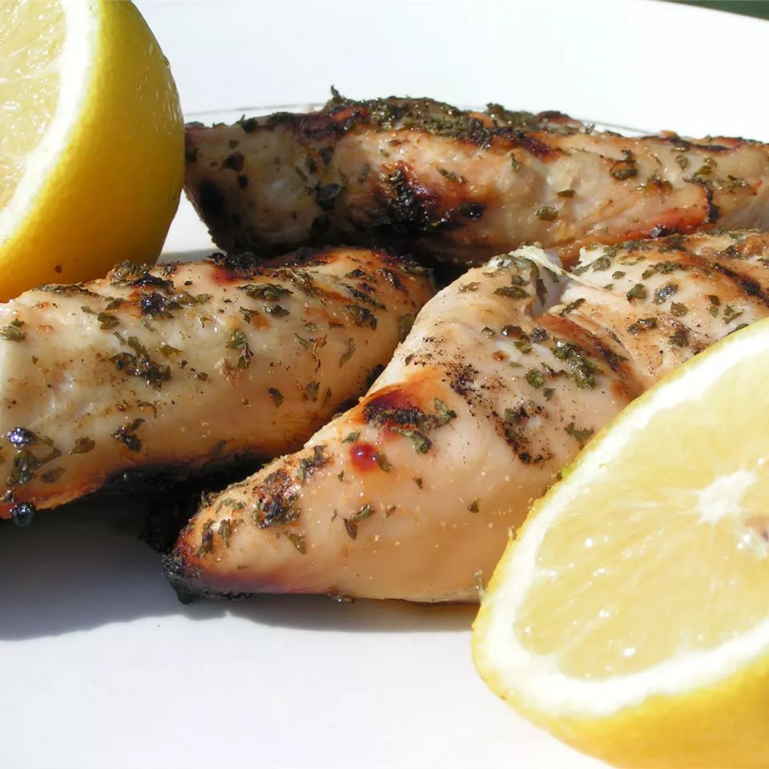

How to make juicy Grilled Chicken!

Ingredients
- 4 skinless, boneless chicken breast halves
- ½ cup lemon juice
- ½ teaspoon onion powder
- ground black pepper to taste
- seasoning salt to taste
- 2 teaspoons dried parsley, or oregano
Steps to Prepare
- Preheat an outdoor grill for medium-high heat, and lightly oil the grate.
- Dip chicken in lemon juice, and sprinkle with onion powder, ground black pepper, seasoning salt, and parsley. Discard any remaining lemon juice.
- Grill marinated chicken until no longer pink and juices run clear, about 8 to 10 minutes per side. An instant-read thermometer inserted into the center should read at least 165 degrees F (74 degrees C).